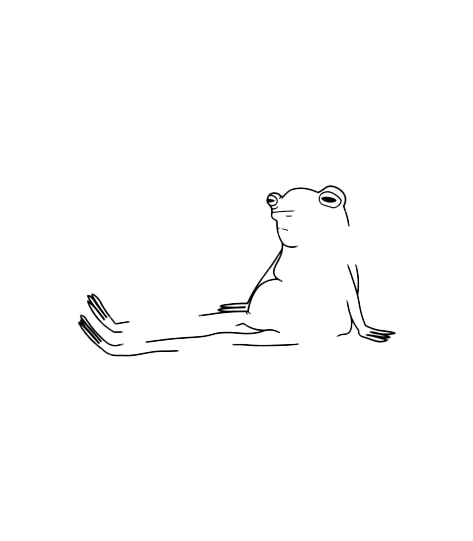

,
MINDFULNESS IS WHAT YOU NEED ! great progress you have here.
Mindfulness means that you maintain a self awareness in the present moment, without judgement.
It means taking care of yourself, for yourself.
The basic things you can incorporate to your day can be:
- Wake up and scream into your pillow for 5 minutes straight. Yeah, it's gonna sound crazy to your roommates, but it'll feel damn good to let out all that pent-up anger and frustration.
- Take a cold shower to shock your system awake and get your blood pumping. Cry as much as you want, nobody can see your tears when there's water falling down your face.
- Write in a journal for 10 minutes every morning. Write down all the crappy feelings you're experiencing and then crumple up the page and throw it away. Symbolic, right?
- Do some yoga or stretching to release all that tension you've been holding in your body. Maybe try some hip openers to release any blocked emotions. Plus, it's a good excuse to wear those cute workout fit you've been eyeing.
- Meditate for at least 15 minutes a day. Visualize yourself moving on and being happy without your ex. Don't worry if you get distracted, just bring your attention back to your breath and the image of you thriving without them.
Remember, getting over a break up is hard, but you're a badass who can handle anything. Just take it one day at a time, and don't forget to love yourself along the way.

Now that you have this awesome list of habits to incorporate, let your life begin !!
Choose wisely!
Try dating
???? (whut, umm okay..)